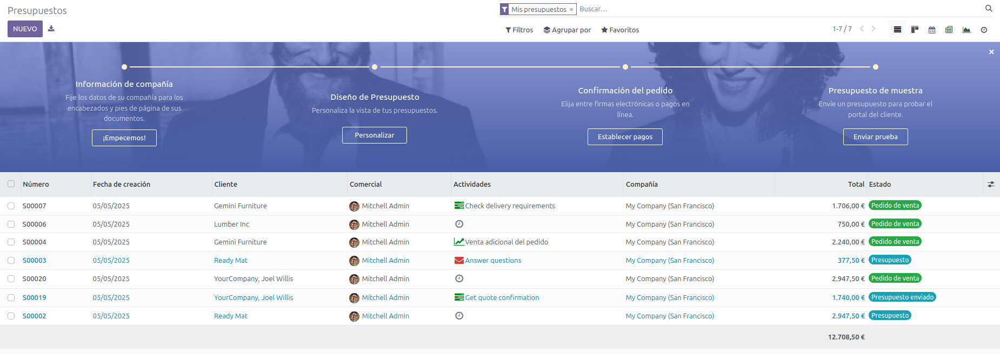

Modulo - Ventas
El módulo de Ventas permite gestionar presupuestos, pedidos de clientes y contratos de forma rápida y eficiente.
¿Cómo se usa?
- Desde el menú principal, accedemos a Ventas.
- Se crean presupuestos personalizados que se pueden enviar directamente al cliente.
- Al confirmar un presupuesto, se genera un pedido de venta automáticamente.
- Está vinculado con los módulos de Inventario y Facturación para automatizar entregas y pagos.
Vista general de presupuestos:
Ejemplo de presupuesto:

¿Por qué lo elegimos?
Es fundamental para cualquier negocio que venda productos o servicios. Facilita el seguimiento de los pedidos, mejora la atención al cliente y agiliza el proceso de facturación.
↑